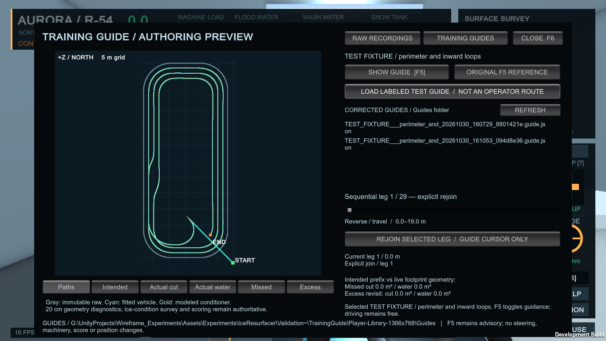
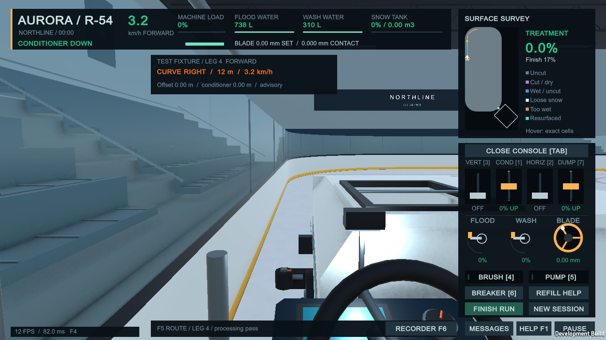
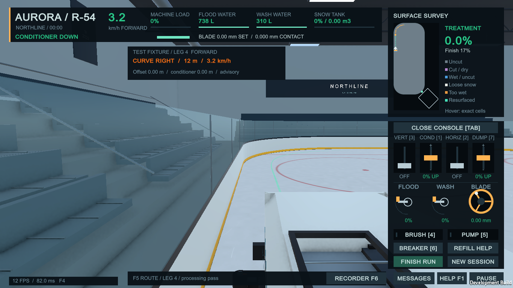
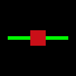
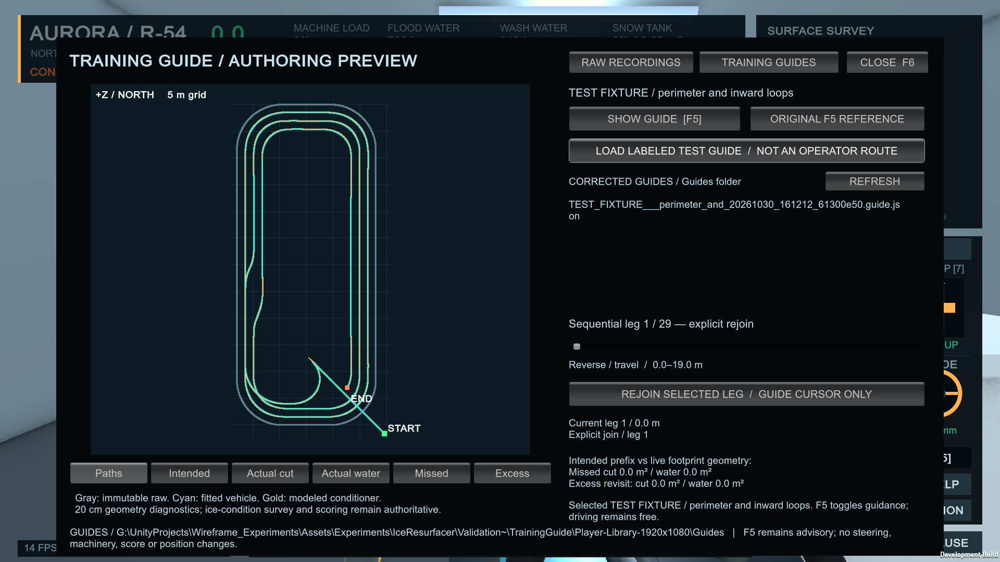
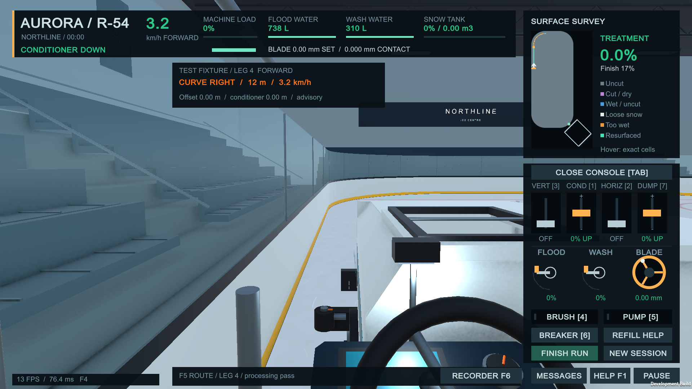
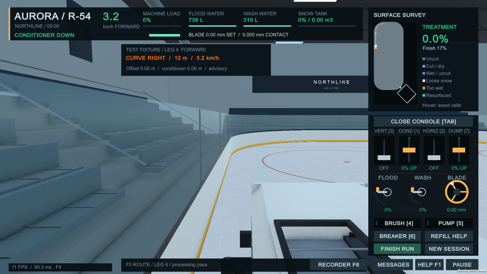
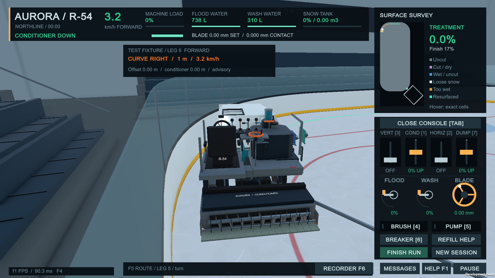

All routes here are labeled deterministic tests. No actual operator recording was supplied. The original F5 generated reference remains the startup default. Click any image for its original resolution.
Validation results and modified files · Recording / editing / guide instructions · Portable test guide · Unmodified raw test source
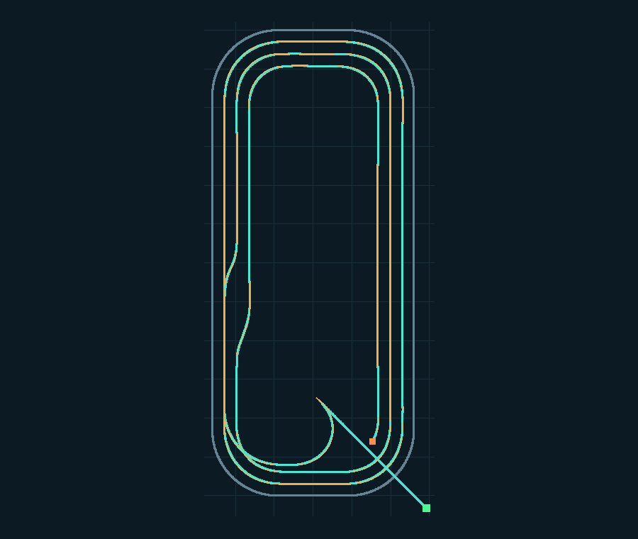
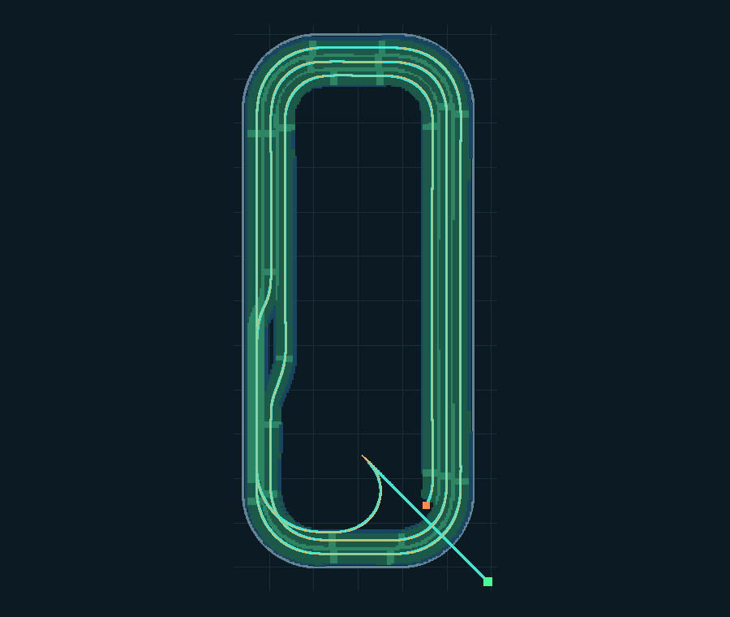
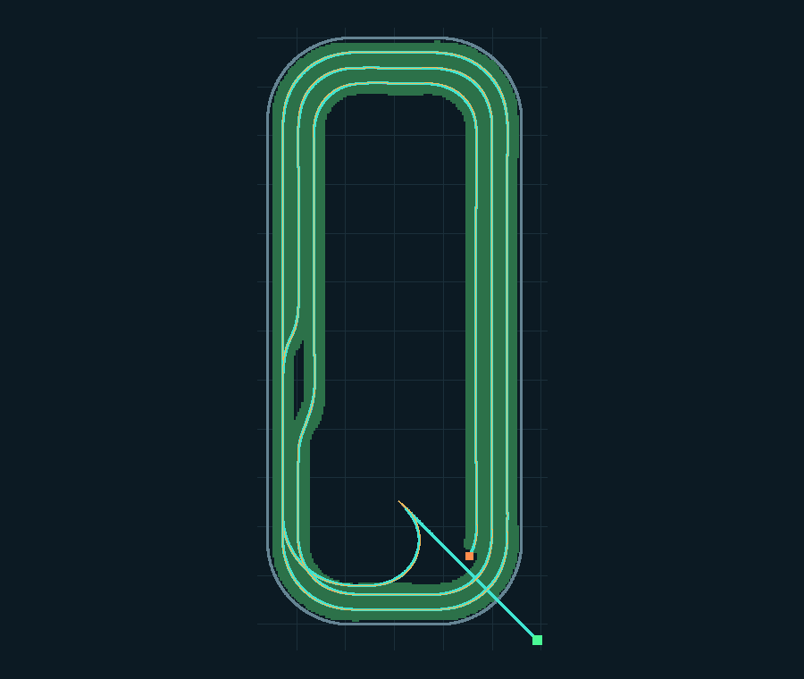
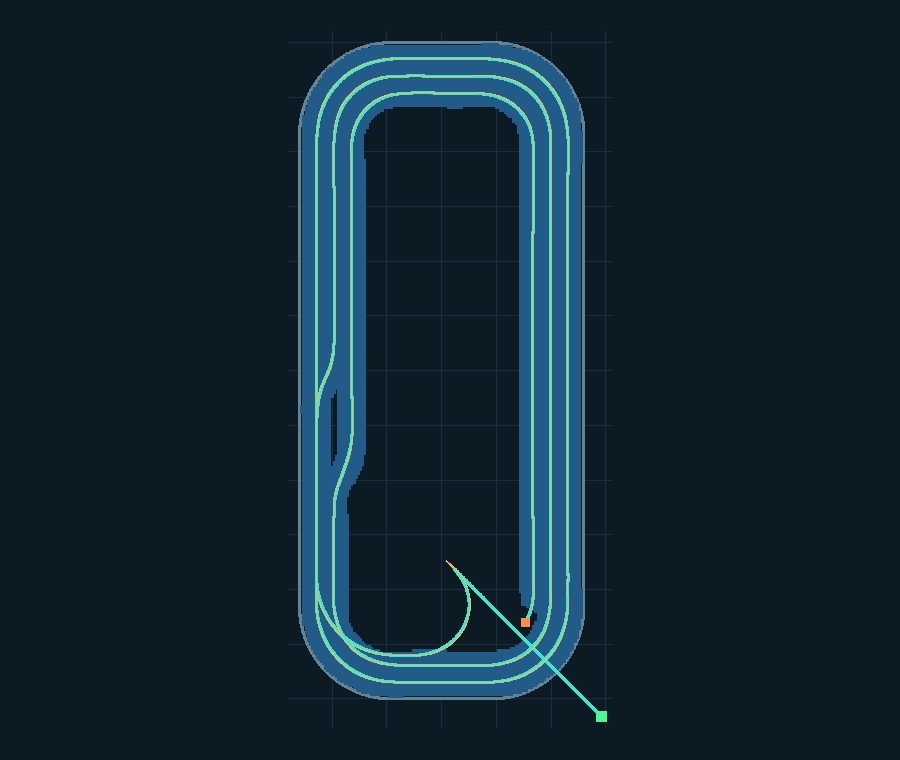
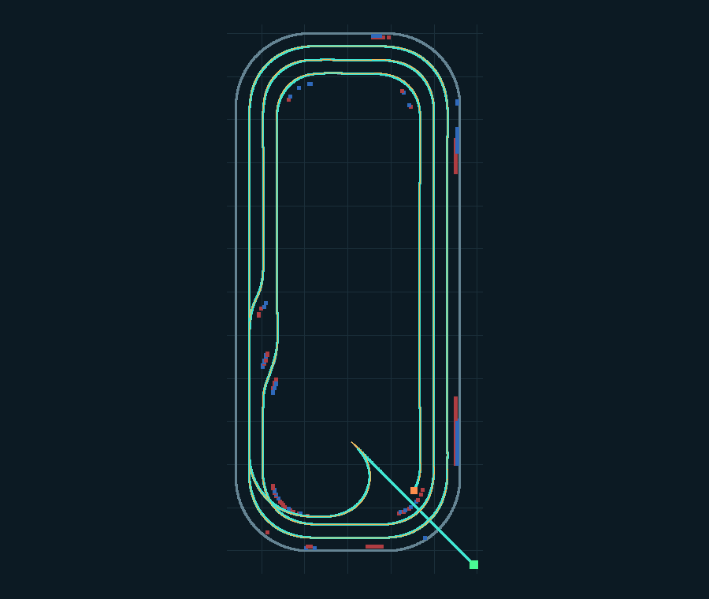








Editor images are direct exports of the shared authoring-preview texture, not captures of the whole Editor window. Native images include real IMGUI and world rendering. Their camera/vehicle poses are explicit rendering fixtures; they are not claims of a manually completed operator run.
| Resolution | Guide | Frames | Mean / p95 frame ms | CPU work ms | GC B/frame |
|---|---|---|---|---|---|
| 1366x768 | training_guide_off/on are matched deterministic normal-control straight work passes with the same explicitly selected fixture. Only F5 visibility/observation differs. CPU_work includes sequential guide/footprint observation; frame includes guide rendering | HUD and minimap. No guidance drives the benchmark. | None / None | None | None |
| 1366x768 | training_guide_off | 299 | 4.986 / 8.703 | 1.427 | 12489 |
| 1366x768 | training_guide_on | 299 | 4.840 / 8.295 | 1.296 | 20002 |
| 1920x1080 | training_guide_off/on are matched deterministic normal-control straight work passes with the same explicitly selected fixture. Only F5 visibility/observation differs. CPU_work includes sequential guide/footprint observation; frame includes guide rendering | HUD and minimap. No guidance drives the benchmark. | None / None | None | None |
| 1920x1080 | training_guide_off | 299 | 4.487 / 8.570 | 1.365 | 11379 |
| 1920x1080 | training_guide_on | 299 | 5.504 / 9.950 | 1.474 | 18892 |
Hidden development-player throughput on RTX 3050 Laptop / D3D11. Normal controls drive both workloads. Setup/fitting is excluded. CPU work includes physics and guide observation; frame time includes rendering, IMGUI and map. Short samples and order/warmup variance prevent interpreting a faster row as a guide speedup. Native hidden-window presentation warnings prevent focused-window latency claims. See CSV files for full counters.